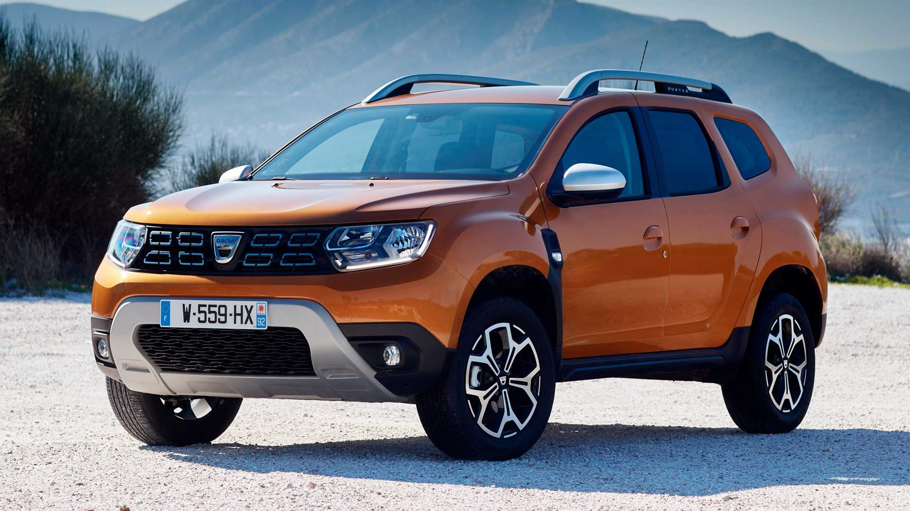
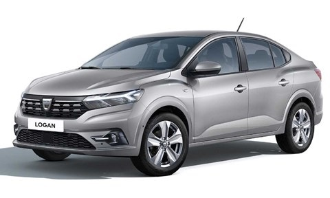
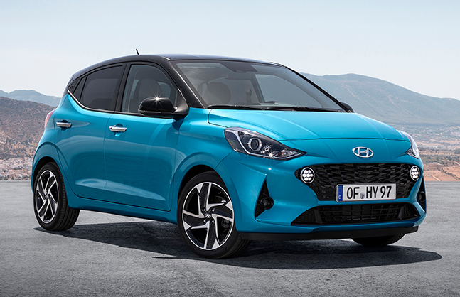
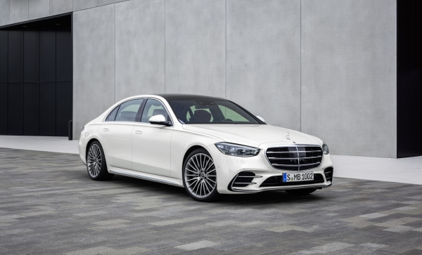
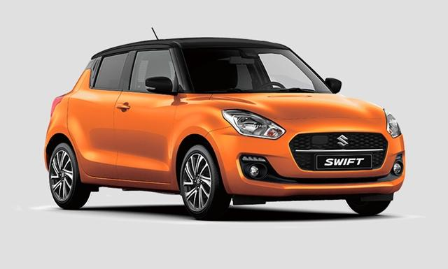
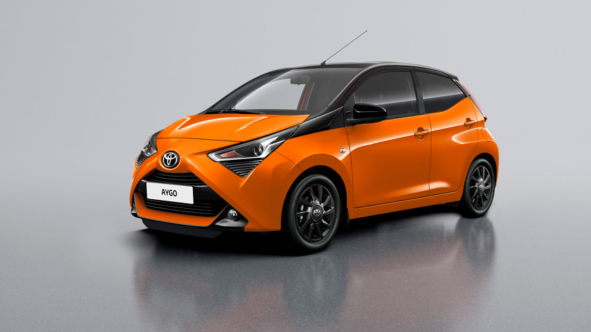

|  |
Dacia DusterThe Dacia Duster is a compact sport utility vehicle (SUV) produced and marketed jointly by the French manufacturer Renault and its Romanian subsidiary Dacia since 2010. It is currently in its second generation, launched in the autumn of 2017. It is marketed as the Renault Duster in certain markets such as India, Indonesia, Iran, Kazakhstan, Russia, Mexico, Nepal, Egypt, the Middle East, South Africa, Ukraine and South America.[1] The first generation was rebadged and restyled as the Nissan Terrano in CIS countries and India.[2] It is introduced since March 2010, and is the third model of the Dacia brand based on the Logan platform, after the Sandero. |
|  |
Dacia LoganThe Dacia Logan is a small family car produced by both the French car manufacturer Renault and its Romanian subsidiary Dacia since mid-2004. It has been produced as a sedan, station wagon, or pick-up. It has been manufactured at Dacia's automobile plant in Mioveni, Romania, and at Renault (or its partne rs') plants in Morocco, Brazil, Argentina, Turkey, Russia, Colombia, Iran and India. The pick-up has al so been produced at Nissan's plant in Rosslyn, South Africa. |
|  |
Hyundai i10The Hyundai i10 is a city car produced by the South Korean manufacturer Hyundai since 2007. It replaced the Hyundai Atos in the model line-up, and was initially available only as a five-door hatchback body style. The third generation i10 was unveiled in India on 7 August 2019 and launched on 20 August 2019, offered in 10 variants across petrol and diesel engines as well as manual and automatic transmissions and a sedan model, the Hyundai Aura. |
|  |
Mercedes-Benz S-ClassThe Mercedes-Benz S-Class, formerly known as Sonderklasse (German for "special class", abbreviated as "S-Klasse"), is a series of full-size luxury sedans, limousines and armored sedans produced by the German automaker Mercedes-Benz, a division of German company Daimler AG. The S-Class is the d esignation for top-of-the-line Mercedes-Benz models and was officially introduced in 1972 with the W116, and has remained in use ever since. The S-Class is the flagship vehicle for Mercedes-Benz. |
|  |
Suzuki SwiftThe Suzuki Swift (Japanese: スズキ・スイフト, Suzuki Suifuto) is a subcompact car produced by Suzuki. The Suzuki Swift is classified as a B-segment marque in the European single market, a segment refe rred to as a Supermini in British isles. Prior to this, the "Swift" nameplate had been applied to the rebadged Suzuki Cultus in numerous export markets since 1983 and became its own model since 20 04. |
|  |
Toyota AygoThe Toyota Aygo is a city car sold by Toyota in Europe since 2005. It is built alongside the related Citroën C1 and Peugeot 107/108 at the Toyota Peugeot Citroën Automobile Czech (TPCA) joint venture in Kolín, Czech Republic. The Aygo was first displayed at the 2005 Salon de l'Automobile de Genève. The name "Aygo" comes from "i-go", symbolising freedom and mobility.[4] |